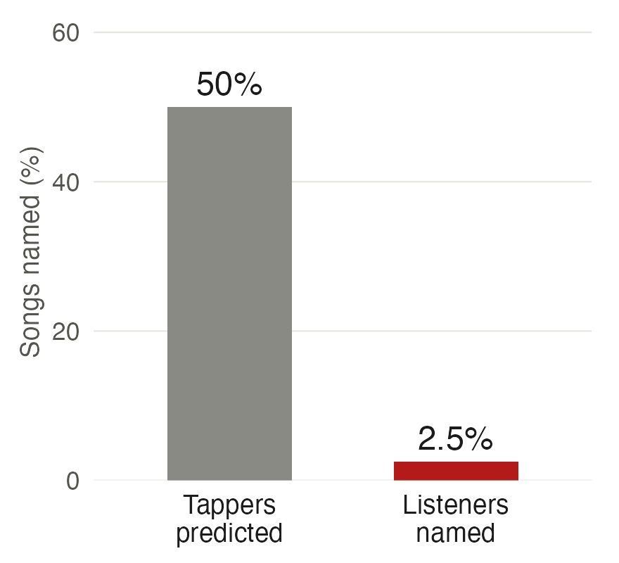
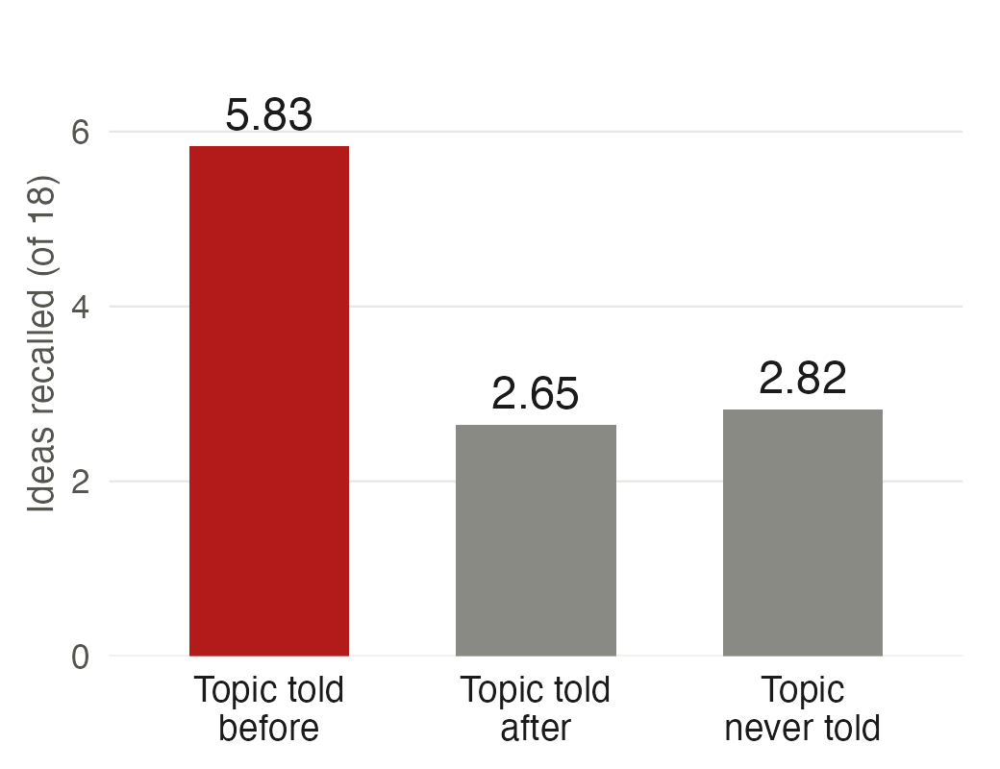
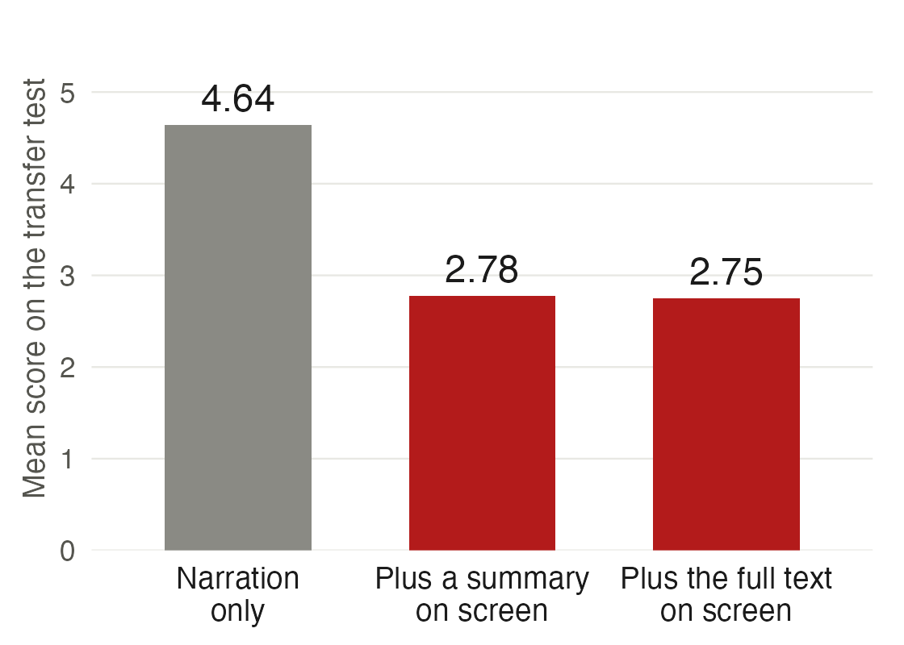
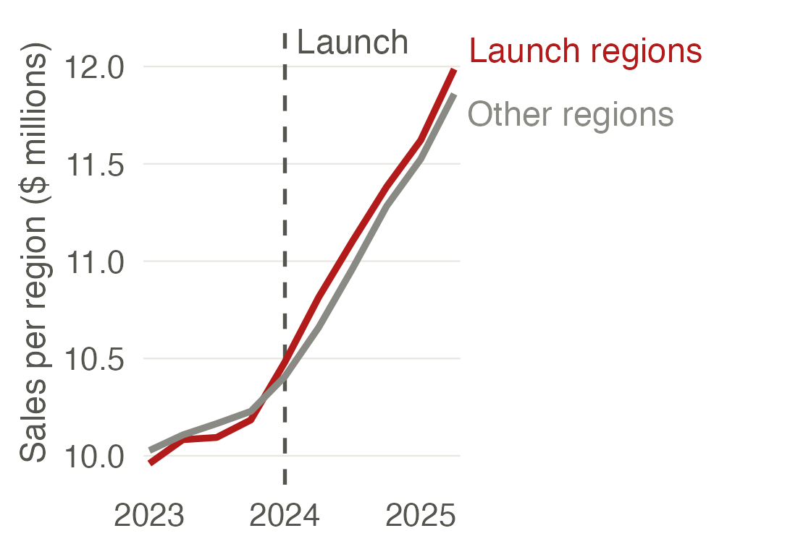
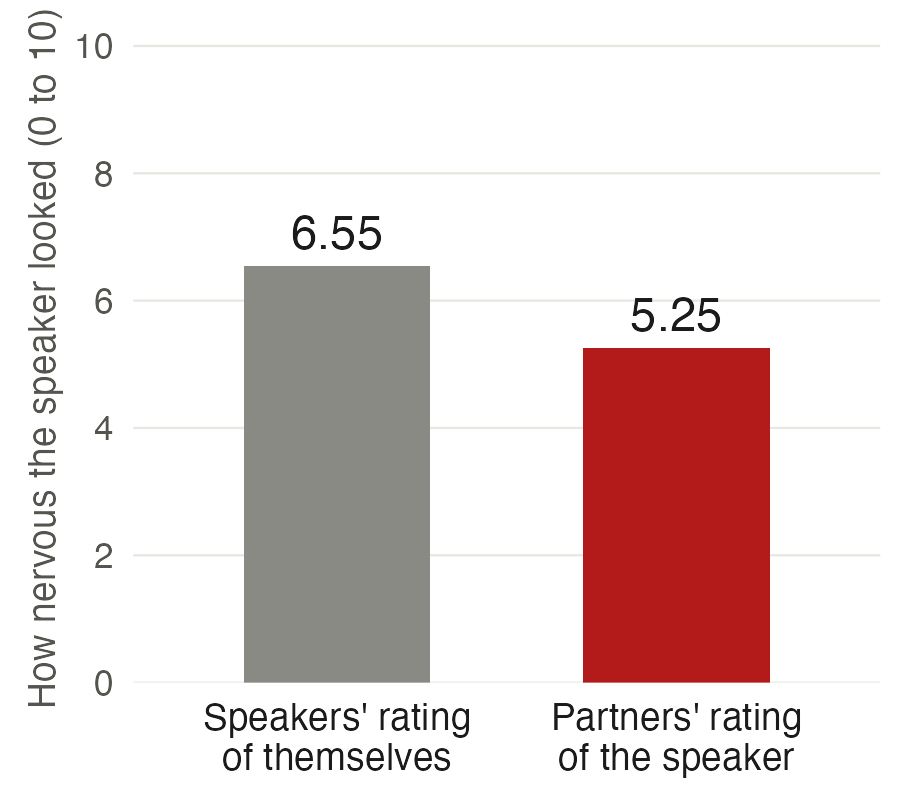

AEM 6991
MPS Capstone Project I
Prof. Ariel Ortiz-Bobea
12 · Speaking
Wednesday, November 11, 2026

Speaking differs from writing
- Meetings 10 and 11 prepared a document for a reader.
- A reader can skim, read a step again and stop.
- A listener hears the talk once, in the speaker’s order and at the speaker’s pace.
- A listener who misses a step has lost it.
- Today is about preparing a talk for a listener.
Outline
- The audience. Who is listening and what they already know.
- The message. One sentence, stated first.
- The structure. The first minute, ten minutes for a proposal, signposts and the last minute.
- The slides. One point per slide, with the words you will not say.
- The delivery. Voice, eyes, stance and rehearsal.
- The questions. Three kinds of question and a structure for an answer.
1. The audience
Four questions about the audience
| The question | Your presentation on December 2 |
|---|---|
| 1. Who is in the room? | An expert in a seminar room, hearing your proposal for the first time |
| 2. What do they already know? | Research designs and their assumptions. Your setting and your data are new to them |
| 3. What will they decide? | Whether the proposal is important, sound and feasible |
| 4. What should they remember tomorrow? | Your message, in one sentence |
- Each team has 10 minutes to present and 4 minutes for questions.
- The presentation is graded against the rubric in the syllabus.
- Next: speakers get question 2 wrong, as an experiment shows.
How often can a listener name a tapped song?
Question 2: What do they already know?
- Elizabeth Newton ran this experiment for her 1990 doctoral dissertation in psychology at Stanford.
- A tapper picks a well-known song, such as “Happy Birthday”, and taps its rhythm on a table.
- A listener hears only the taps and tries to name the song.
- Before the listener answers, the tapper predicts the chance that the listener names it.
- Next: what Newton found.
Newton (1990), The rocky road from actions to intentions, PhD dissertation, Stanford University.
Listeners named 3 of 120 songs
Question 2: What do they already know?
- 80 Stanford undergraduates worked in 40 pairs, and each tapper tapped three well-known songs.
- Tappers predicted that listeners would name 50% of the songs.
- Listeners named 3 of the 120 songs, which is 2.5%.
- The tapper hears the tune in their head. The listener hears only knocks on a table.

- Key lesson: a speaker who knows the material overestimates how much the audience follows.
- Next: the name for this error.
Newton (1990), The rocky road from actions to intentions, PhD dissertation, Stanford University. Heath and Heath (2006), “The Curse of Knowledge”, Harvard Business Review.
The curse of knowledge
Question 2: What do they already know?
- The curse of knowledge: once you know something, it is hard to imagine not knowing it.
- Camerer, Loewenstein and Weber named it in 1989 after an experiment with business students at Wharton.
- A first group forecast companies’ earnings before the earnings were known.
- A second group was told the actual earnings, then had to guess the first group’s forecasts.
- The second group’s guesses were pulled toward the earnings it knew.
- A speaker is a tapper. After months on a project, every step sounds obvious.
- Solution: say each step aloud, and define each term when it first appears.
- Next: one proposal opened for listeners who know different things.
One proposal opened for two audiences
Question 2: What do they already know?
For a general audience
“Every grocery chain now has a loyalty program. Shoppers get discounts, and the chain learns what they buy. One chain launched a program in 2024, and nobody has checked whether it changed what people spend.”
For an expert
“We ask whether a grocery chain’s loyalty program raised spending per customer. The chain launched it in 8 of its 20 regions in January 2024. We compare launch regions with the others before and after, and the estimate rests on parallel trends.”
- Both openings belong to the same proposal, for the hypothetical chain of meeting 11.
- The expert’s opening names the design and its assumption in the first half minute.
- Next: what the expert will decide.
What the expert is judging
Question 3: What will they decide?
| The expert asks | Where your project description answered it |
|---|---|
| Importance. Is the question worth answering? | 1. Research question. 2. Why it matters and who acts on the answer |
| Soundness. Will the design answer it? | 3. Approach, with the design and its identifying assumption. 5. Anticipated challenges |
| Feasibility. Can this team carry it out in the spring? | 4. Data and access, with the status of each dataset. 6. Team plan |
- Your talk on October 28 covered the question, who acts on the answer, the approach and the data in three minutes.
- December 2 covers the same ground in ten minutes, for the full proposal.
- As on October 28, the grade also counts fitting the time and how the team answers questions.
- Next: question 4 is the message, and section 2 covers it.
Project description brief, sections 1 to 6 and “The talk at meeting 10”.
2. The message
Three questions about the message
| The question | Your presentation on December 2 |
|---|---|
| 1. What is the message in one sentence? | What your project will measure and how |
| 2. Where does it come in the talk? | In the first minute and again in the last |
| 3. What supports it? | Three reasons: it is worth knowing, the design can answer it, the team can do it |
- Next: what a message is.
A talk has one message
Question 1: What is the message in one sentence?
- The message is the one sentence a listener could repeat the next day.
- It says what the project will find out and how.
- A topic such as “loyalty programs” names a subject and has no message yet.
- Meeting 11 asked the same of a figure: one figure makes one point.
- Next: one message drafted three times.
A message in three drafts
Question 1: What is the message in one sentence?
- A topic. “We study loyalty programs in grocery retail.”
- A question. “Did the loyalty program raise spending per customer?”
- A message. “We will measure how much the 2024 loyalty program raised spending per customer, by comparing launch regions with the other regions before and after the launch.”
- The message names the question, the design and what will be learned.
- Next: where the message goes in the talk.
The answer comes first
Questions 2 and 3: Where does it come in the talk? What supports it?
- Barbara Minto developed the pyramid principle at McKinsey, a consulting firm, in the 1960s and 1970s.
- The answer comes first, the reasons follow in groups, and each reason rests on its evidence.
- Next: the order of the rest of the talk.
Minto, The Pyramid Principle: Logic in Writing and Thinking, first published 1978.
3. The structure
Four questions about the structure
| The question | Your presentation on December 2 |
|---|---|
| 1. What does the first minute do? | It states the question and what the room will know at the end |
| 2. Where do the ten minutes go? | Most go to the design, the rest to importance, data and threats |
| 3. How does the room know where the talk is? | A spoken signpost between parts and between speakers |
| 4. What does the last minute do? | It repeats the message and what the project will deliver |
- Next: a passage to listen to.
What is this passage about?
Question 1: What does the first minute do?
- The passage describes an activity most people in this room have done.
- It never names the activity. Which activity is it?
“First you check that you have everything, because finding out later is costly. Then you wait in one line, show what they ask for, and wait in a second line. Some things must come out and sit apart, and afterwards they go back in. If you are early there is nothing to do. If you are late nothing else matters. At the end you find your number, put the large item above you, and sit down.”
- The activity: catching a flight.
- Now each sentence has a place: the passport, check-in and security, the laptop out of its bag, the gate, the seat number, the overhead bin.
- Every sentence was plain English, and the passage still made no sense until the topic was known.
- Next: an experiment on telling listeners the topic first.
The topic helps only when it comes first
Question 1: What does the first minute do?
- John Bransford and Marcia Johnson, psychologists at Stony Brook University, read listeners a passage of this kind in 1972.
- Its topic was washing clothes.
- One group was told the topic before the passage, one after it, and one never.
- Listeners then wrote down what they recalled, scored out of 18 ideas.

- Key lesson: say what the talk is about before the details. The first minute states the question and the message.
- Next: an opening that most teams give.
A weak opening
Question 1: What does the first minute do?
As given
“Good afternoon everyone. We are Team K, and thank you for having us. Here is the outline of our talk. First the background, then the literature, then our data, then the methods, and then the timeline.”
Rewritten
“Did a grocery chain’s loyalty program raise what its customers spend? In ten minutes you will know how we plan to measure it and what could go wrong.”
- The question arrives late. The first half minute goes to greetings and an agenda.
- Solution: state the question and what the room will learn in the first minute.
- Next: what an expert audience wants after the opening.
What a seminar audience needs first
Question 2: Where do the ten minutes go?
- Jesse Shapiro, an economist at Harvard, wrote notes for researchers presenting empirical work in economics.
- His first line: “Your audience does not care about your topic.”
- He lists what the audience needs in the first slides:
- A reason to care, in the first one or two slides.
- The research question.
- What the project adds to what is known.
- The design, with its identifying assumption stated.
- One quantity to take away.
- A proposal has no estimate yet, so the fifth item is the quantity you will estimate.
- Next: those needs spread over ten minutes.
Shapiro, “How to give an applied micro talk: unauthoritative notes”.
Ten minutes for a proposal
Question 2: Where do the ten minutes go?
| Minutes | Part of the talk | Proposal headings |
|---|---|---|
| 0 to 1 | The question and the message | Research problem |
| 1 to 2.5 | Why it is worth knowing and what is already known | Practical justification; what is already known |
| 2.5 to 6 | The design, its assumption and the figure you point at | Conceptual model; methodological approach; internal validity |
| 6 to 8 | The data, the access and the sample | Study sample; data and access |
| 8 to 9 | What could undermine it | External validity; limitations and self-critique |
| 9 to 10 | The work plan and the message again | Work plan |
- The design gets the most time, because soundness is what the expert came to judge.
- Next: how listeners keep track of where the talk is.
Signposts tell the room where it is
Question 3: How does the room know where the talk is?
- A signpost is a spoken sentence that says where the talk is.
- “That is the question. Now the design.”
- “Two things could undermine this. The first is the choice of launch regions.”
- “So far: the question and why it matters. Next, how we answer it.”
- A listener who drifted uses the signpost to rejoin.
- Next: the signpost between two speakers.
A team talk needs handoffs
Question 3: How does the room know where the talk is?
- Each speaker takes one part of the talk.
- The handoff is spoken: “Sam will now explain how we measure it.”
- One member keeps the clock and signals at eight minutes.
- The team agrees beforehand who answers which kind of question.
- Next: the last minute.
The last minute
Question 4: What does the last minute do?
As shown
Thank you!
Questions?
Redrawn
What this project will deliver by May
- An estimate of how much the loyalty program raised spending per customer
- A test of whether launch regions and the others moved together before 2024
- A recommendation on the 12 regions still waiting
- The last slide stays up longest. It is on the screen for all four minutes of questions.
- Solution: end on the message and what the project will deliver, and leave that slide up.
- Next: what goes on the screen.
4. The slides
Three questions about a slide
| The question | Your presentation on December 2 |
|---|---|
| 1. Which words will you say aloud? | Those words come off the slide |
| 2. What is its one point? | One point per slide, stated in its title |
| 3. Can the back row read it? | Large type, one figure and a few labels |
- Next: an experiment on words that are both spoken and shown.
Duplicated text lowered learning
Question 1: Which words will you say aloud?
- Richard Mayer studies learning from words and pictures at the University of California, Santa Barbara.
- 109 students watched a narrated animation of how lightning forms.
- Some also saw the narration printed on the screen.
- A transfer test then asked them to solve new problems about lightning.
- The redundancy principle: people learn less when the screen repeats the words they hear.

- Next: what that looks like on a proposal slide.
A slide read aloud
Question 1: Which words will you say aloud?
As shown
Methodology
- We use a difference-in-differences design in which the treatment group consists of the 8 regions where the loyalty program was launched in January 2024 and the control group consists of the remaining 12 regions where it was not launched.
- The outcome variable is average monthly spending per customer, which we compute from transaction-level data provided by the chain covering January 2021 to December 2025 for all 300 stores.
- The identifying assumption is that, in the absence of the program, spending per customer in launch regions would have followed the same trend as in the other regions (parallel trends).
- We will assess this assumption by comparing pre-launch trends over 2021 to 2023 and by estimating an event-study specification with leads and lags.
- Standard errors will be clustered at the region level.
Redrawn
Launch regions and the others moved together before 2024

- The room reads ahead. People read faster than the speaker talks, and then stop listening.
- Solution: put the figure and a few labels on the slide, and say the sentences.
- Next: rules for what stays on the slide.
One point per slide
Questions 2 and 3: What is its one point? Can the back row read it?
- Each slide makes one point, and the title states it.
- A second point gets a second slide.
- The back row can read every word. Winston’s minimum is a 40-point font.
- Detail the expert may ask about goes on backup slides after the last slide.
- Next: how the talk is delivered.
5. The delivery
Four questions about delivery
| The question | Your presentation on December 2 |
|---|---|
| 1. How fast and how loud? | Slower than feels natural, with pauses, to the back row |
| 2. Where do you look and stand? | At one listener at a time, beside the screen |
| 3. What do the nerves do? | They show less than you feel |
| 4. How do you rehearse? | Aloud, standing and timed, with the whole team |
- Next: first, a claim you will hear about delivery.
Is communication 93% nonverbal?
A common claim about delivery
- A common claim in presentation workshops: a message is 7% words, 38% tone of voice and 55% facial expression.
- The numbers come from two 1967 experiments by Albert Mehrabian, a psychologist at the University of California, Los Angeles.
- A recorded voice said one word, such as “dear” or “terrible”, in a warm, a neutral or a cold tone.
- Listeners rated how the speaker felt about the person being spoken to.
- When the word and the tone disagreed, as with “dear” in a cold tone, the ratings followed the tone.
- Mehrabian limits the numbers to talk about feelings or attitudes.
- Key lesson: the 93% is about judging a speaker’s feelings from one word. In a research talk the words carry the content.
- Next: the four questions, starting with the voice.
Mehrabian and Wiener (1967), Journal of Personality and Social Psychology 6(1). Mehrabian and Ferris (1967), Journal of Consulting Psychology 31(3). Mehrabian’s note on the equations, on his own site.
Pace and pause
Question 1: How fast and how loud?
- Julian Treasure, a consultant on sound, names six tools of the voice in this 2013 talk at TED, a conference of short talks.
- Speak slower than feels natural. Nervous speakers speed up.
- Pause after the message and after each signpost.
- Speak to the back row.
- Let your voice fall at the end of a statement.
- Next: the eyes and the body.
Treasure (2013), “How to speak so that people want to listen”, TED, from 6:18 to 7:21.
Eyes and stance
Question 2: Where do you look and stand?
- Look at one person for a full sentence, then at another.
- Stand beside the screen and face the room.
- Mark what matters with an arrow on the slide.
- Keep your notes to one card with the first sentence of each part.
- Next: the nerves.
Nervousness shows less than it feels
Question 3: What do the nerves do?
- Kenneth Savitsky and Thomas Gilovich ran two studies with Cornell students.
- 40 students gave 3-minute speeches in pairs and rated how nervous each speaker looked.
- Speakers rated themselves 6.55 of 10. Their partners rated them 5.25.
- The illusion of transparency: people believe their feelings show more than they do.
- In the second study, speakers who were told about it gave speeches that observers rated higher.

- Next: the rehearsal.
Rehearse aloud with a clock
Question 4: How do you rehearse?
- A talk read silently runs short. Aloud it takes longer, and each handoff adds time.
- Solution: rehearse standing, aloud and timed, with the whole team.
- Rehearse once in front of someone outside the project.
- Rehearse the first and the last minute most.
- Cut material until the talk runs nine minutes.
- Next: the four minutes after the talk.
6. The questions
Three kinds of question
| The kind of question | An example | Your response on December 2 |
|---|---|---|
| 1. A clarification | “What counts as a launch region?” | Answer in one sentence and go on |
| 2. A challenge | “The chain chose where to launch.” | Answer first, then give the reason |
| 3. One you cannot answer | “What share of sales comes from members?” | Say so, then say what would settle it |
- The four minutes of questions are part of the presentation and are graded with it.
- Next: a challenge to the grocery-chain proposal.
How would you answer this question?
Kind 2: a challenge
“The chain chose which regions got the program first, and it probably chose its strongest markets. Why is your estimate not just picking that up?”
- The expert is challenging the comparison group.
- The proposal compares 8 launch regions with 12 others, before and after January 2024.
- Next: a structure for the answer.
A structure for an answer
Kind 2: a challenge
- Matt Abrahams teaches communication at the Stanford Graduate School of Business.
- He gives three steps for an answer nobody has prepared:
- What? “Yes. Launch regions had higher sales before 2024.”
- So what? “Our design compares changes, so a constant gap between the groups drops out. The estimate fails only if launch regions were already growing faster.”
- Now what? “We will plot both groups for the three years before the launch and report whether they moved together.”
- Next: the question you cannot answer.
“I don’t know” is an answer
Kind 3: one you cannot answer
- A bluff costs more than a gap. An expert can tell, and then doubts the rest of the talk.
- Solution: say “I don’t know”, then say what would settle it.
- “I don’t know what share of sales comes from members. The transaction data record it, and we will report it.”
- Know four numbers without looking: the sample size, the effect you expect, the source of the data and its cost.
- Next: the six sections as six steps.
Six steps for December 2
- Write down who is listening and what they will judge.
- State your message in one sentence, in the first minute.
- Budget the ten minutes, with a spoken signpost between parts.
- Give each slide one point, and take off the words you will say.
- Rehearse aloud as a team with a clock.
- Agree who answers what, and say “I don’t know” when it is true.
Handout: the talk scoring sheet, on this meeting’s page.
Scoring recorded talks
Six questions for each talk
- Each student answers these six questions for each talk in their own sheet.
- Open the talk scoring sheet. It is also on the course site, under meeting 12, Handouts.
- Who is the talk for?
- What is the message in one sentence, and when does it arrive?
- How is the talk organized?
- What do the slides add?
- Which two delivery choices stand out?
- What should your team use on December 2?
Talk 1
A complete three-minute talk
- Tamri Matiashvili, a doctoral student in economics at Stanford, placed second in the university’s 2025 Three Minute Thesis competition.
- Entrants explain their thesis to a general audience in three minutes with one slide.
Talk 2
The first five and a half minutes of a 17-minute talk
- Esther Duflo, an economist at MIT, spoke at TED in 2010 about randomized experiments on poverty.
- She shared the 2019 Nobel Prize in economics for this work.
Talk 3
The first two and a half minutes of an hour-long lecture
- Alan Krueger, a labor economist at Princeton, gave the Feldstein Lecture at the 2015 Summer Institute of the National Bureau of Economic Research (NBER).
- The audience was research economists.
Talk 4
A complete six-minute talk
- Will Stephen, a comedy writer, spoke at TEDxNewYork, an independently organized TED event.
- The talk has no content. Every delivery technique is still there.
AEM 6991